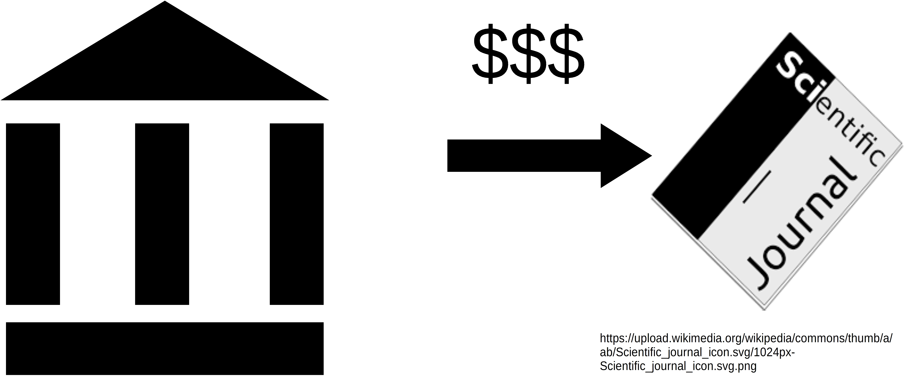
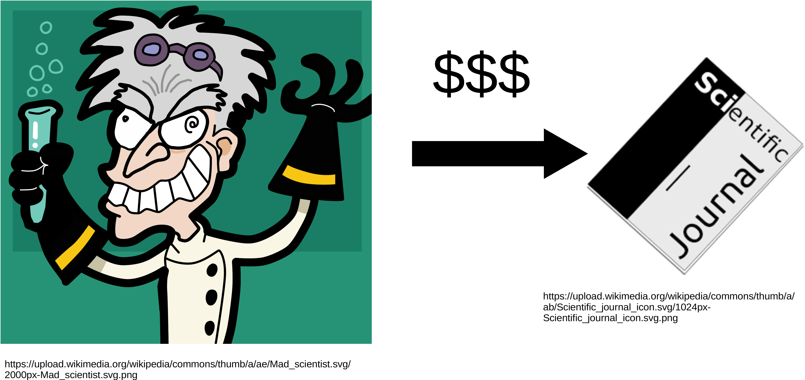

name: inverse layout: true class: center, middle, inverse --- #Brainhack 2019 ##Open Access --- layout: false # Outline: ## What is Open Access? ## Why Open Access? ## How to: Open Access ## Preregistration --- template: inverse ## What is Open Access? --- layout: false ## What is Open Access? - ≠ Closed Access - University pays for journal subscription - Author pays nothing (though there are fees for colored figures etc.) <center><center/> --- ## What is Open Access? - Open Access - Articles can be accessed for free - Author pays for publication (we'll talk about means of financing) <center><center/> --- ## Types of Open Access - <span style="color:Goldenrod">Gold<span/> - <span style="color:Green">Green<span/> --- ## Types of Open Access - <span style="color:Goldenrod">Gold</span>: The whole article can be accessed for free - <span style="color:Green">Green</span>: --- ## Types of Open Access - <span style="color:Goldenrod">Gold</span>: The whole article can be accessed for free - <span style="color:Green">Green</span>: A preprint may be published -- - Preprint: Version of an article before peer review - can be uploaded to a dedicated preprint server (more on these later) --- template: inverse ## Why Open Access? --- ## Why Open Access? - Results of science should be freely accessible - paid with public money, so the results should also be public -- - Principle of equity - Researchers from all countries should be able to access research - might not be given when universities can't pay for the fees! --- ## Why Open Access? - Personal benefit: more outreach! - more media coverage - more citations (McKiernan et al., 2016) --- template: inverse ## How to: Open access --- ## How to: Open access - Several options: - <span style="color:Goldenrod">Publish in Open Access journal</span> -- - <span style="color:Goldenrod">Publish Open Access in traditional journal</span> -- - <span style="color:Green">Publish closed access with Preprint</span> --- ## How to: Find a good Open Access Journal - Website to help you: [Eigenfactor.org](http://www.eigenfactor.org/projects/openAccess/oa.php) -- - allows you to sort journals by cost effectiveness (cost by impact factor) -- - also shows you OA-journals without publishing fees (yes they exist) --- ## How to: Get money for Open Access - Open Access fund (e.g. the ["Open-Access-Publikationsfonds"](https://www.uni-marburg.de/de/ub/forschen/open-access/publikationsfonds) of Marburg University) - Part of research grant (e.g. DFG, EU) --- ## How to: Find out about the OA restrictions of a journal - Another helpful website: [SHERPA/RoMEO](http://sherpa.ac.uk/romeo/index.php?la=en&fIDnum=|&mode=simple) -- <center><img src="images/sherpa1.jpg" width="100%"><center/> --- ## How to: Find out about the OA restrictions of a journal - Another helpful website: [SHERPA/RoMEO](http://sherpa.ac.uk/romeo/index.php?la=en&fIDnum=|&mode=simple) <center><img src="images/sherpa2.jpg" width="100%"><center/> --- ## How to: Find out about the OA restrictions of a journal - Another helpful website: [SHERPA/RoMEO](http://sherpa.ac.uk/romeo/index.php?la=en&fIDnum=|&mode=simple) <center><img src="images/sherpa3.jpg" width="100%"><center/> --- ## How to: Find a preprint server #### Several options: -- - [bioRxiv](https://www.biorxiv.org/) - usually the go-to option for neuroscience -- - [psyArXiv](https://psyarxiv.com/) - might make sense for more "psychology-heavy" papers -- - [PeerJ Preprints](https://peerj.com/) - biggest competitor of the Rxiv servers --- ## How to: Find a preprint server #### Several options: - [Open Science Framework (OSF)](https://osf.io) - lists all mentioned before - you can also upload preprints directly --- template: inverse ## Preregistration --- ## Preregistration - make hypotheses public before data acquisition - list dependent and independent variables - announce statistical analysis -- - Goal: Prevent p-hacking - only preregistered analyses can be confirmatory, everything else is exploratory! --- ## Preregistration - Recommended: [Aspredicted.org](https://aspredicted.org/) - answer nine questions and you are done! - Alternatively: [OSF](https://osf.io) - several preregistration templates --- template: inverse ## Questions? --- ## Literature McKiernan, E. C., Bourne, P. E., Brown, C. T., Buck, S., Kenall, A., Lin, J., … Yarkoni, T. (2016). How open science helps researchers succeed. ELife, 5, e16800. https://doi.org/10.7554/eLife.16800